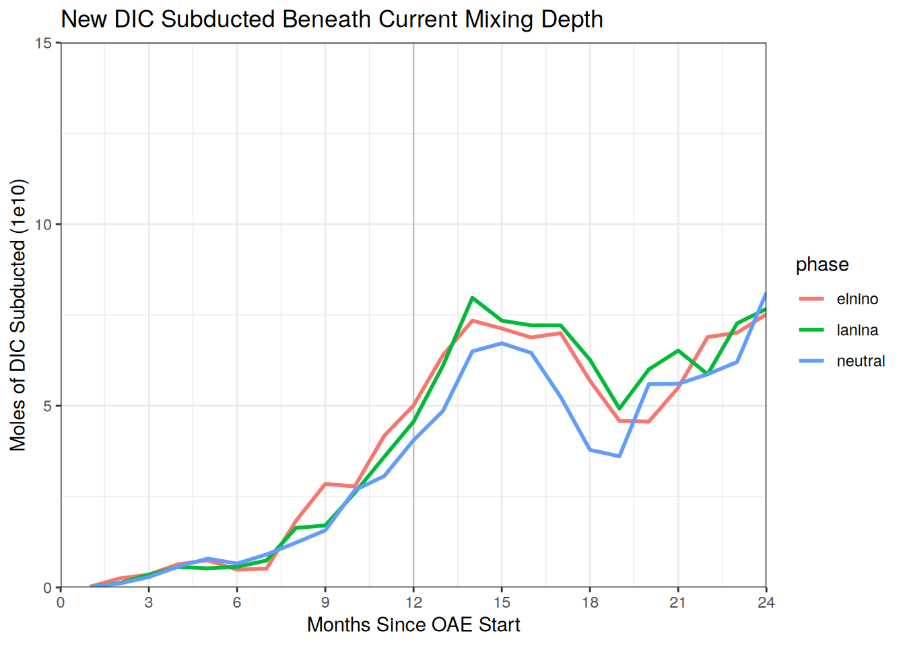

Drivers - Mixing Depth
Victoria Froh
07 April, 2025
Last updated: 2025-04-07
Checks: 7 0
Knit directory: oae_ccs_roms/
This reproducible R Markdown analysis was created with workflowr (version 1.7.1). The Checks tab describes the reproducibility checks that were applied when the results were created. The Past versions tab lists the development history.
Great! Since the R Markdown file has been committed to the Git repository, you know the exact version of the code that produced these results.
Great job! The global environment was empty. Objects defined in the global environment can affect the analysis in your R Markdown file in unknown ways. For reproduciblity it’s best to always run the code in an empty environment.
The command set.seed(20240919) was run prior to running
the code in the R Markdown file. Setting a seed ensures that any results
that rely on randomness, e.g. subsampling or permutations, are
reproducible.
Great job! Recording the operating system, R version, and package versions is critical for reproducibility.
Nice! There were no cached chunks for this analysis, so you can be confident that you successfully produced the results during this run.
Great job! Using relative paths to the files within your workflowr project makes it easier to run your code on other machines.
Great! You are using Git for version control. Tracking code development and connecting the code version to the results is critical for reproducibility.
The results in this page were generated with repository version 5a5f21a. See the Past versions tab to see a history of the changes made to the R Markdown and HTML files.
Note that you need to be careful to ensure that all relevant files for
the analysis have been committed to Git prior to generating the results
(you can use wflow_publish or
wflow_git_commit). workflowr only checks the R Markdown
file, but you know if there are other scripts or data files that it
depends on. Below is the status of the Git repository when the results
were generated:
Ignored files:
Ignored: .Rhistory
Ignored: .Rproj.user/
Untracked files:
Untracked: code/dist_maps.R
Untracked: code/flux_driver_correlations.Rmd
Untracked: code/flux_drivers_calcs.R
Untracked: code/lineplot_stacks.R
Untracked: code/subregions.Rmd
Untracked: surface_dataRG2.feather
Unstaged changes:
Modified: code/Workflowr_project_managment.R
Modified: code/regrid_surface_data.R
Modified: code/temperature_indices.Rmd
Note that any generated files, e.g. HTML, png, CSS, etc., are not included in this status report because it is ok for generated content to have uncommitted changes.
These are the previous versions of the repository in which changes were
made to the R Markdown (analysis/drivers_hbls.Rmd) and HTML
(docs/drivers_hbls.html) files. If you’ve configured a
remote Git repository (see ?wflow_git_remote), click on the
hyperlinks in the table below to view the files as they were in that
past version.
| File | Version | Author | Date | Message |
|---|---|---|---|---|
| Rmd | 5a5f21a | vgfroh | 2025-04-07 | Final code push |
| Rmd | 9445dea | vgfroh | 2025-02-19 | Updates to files/coding fixes |
| html | 91e2272 | vgfroh | 2025-02-19 | Build site. |
| Rmd | a36bcfe | vgfroh | 2025-02-19 | Mixing depth and air-sea co2 flux anlaysis |
Introduction
- Calculate and map maximum mixing depth of each grid cell over first 2 years (all 3 phases)
- Map the difference from the 3-phase mean MMD for each grid cell
- Map the regional distribution of mixing depth in select months (all 3 phases)
- Map the difference from the 3-phase mean MD per grid cell for select months
- Load in dTA data and calculate what fraction was beneath the MMD for time series
- Repeat subducted time series for dDIC data
- Combine full mixing depth data with moles and calculate what fraction was beneath the current mixing depth for time series
- Repeat subducted time series for dDIC data
#loading packages
library(tidyverse)
library(tidync)
library(data.table)
library(arrow)
library(scales)
# Path to intermediate computation outputs
path_outputs <- "/net/sea/work/vifroh/oae_ccs_roms_data/regrid_2/"
# Path to save practice plots when working on them
path_plots <- "/net/sea/work/vifroh/test_plots/"
# loading in previous saved surface variable data
lanina_surf_data <- read_feather(
paste0(path_outputs, "lanina_surf_dataRG2.feather"))
neutral_surf_data <- read_feather(
paste0(path_outputs, "neutral_surf_dataRG2.feather"))
elnino_surf_data <- read_feather(
paste0(path_outputs, "elnino_surf_dataRG2.feather"))
# loading in dTA molar data
lanina_dTA_mol <- read_feather(
paste0(path_outputs,"lanina_dTA_moldataRG2.feather"))
neutral_dTA_mol <- read_feather(
paste0(path_outputs,"neutral_dTA_moldataRG2.feather"))
elnino_dTA_mol <- read_feather(
paste0(path_outputs,"elnino_dTA_moldataRG2.feather"))phase_data <- list(lanina_surf_data, neutral_surf_data, elnino_surf_data)
# Convert lat/lon to numeric and subset first two years
phase_data <- phase_data %>%
lapply(function(table) {
setDT(table)
setorder(table, time)
table[, lat := as.numeric(lat)]
table[, lon := as.numeric(lon)]
table[, month := .GRP, by = time] # gives index in order to each unique time
table <- table[month <= 24] # subsets to first two years
return(table)
})
# return tables to each item
lanina_surf_data <- phase_data[[1]]
neutral_surf_data <- phase_data[[2]]
elnino_surf_data <- phase_data[[3]]
# for alkalinity subduction: using full grid dTA moles data, subset first 2 years
mol_data <- list(lanina_dTA_mol, neutral_dTA_mol, elnino_dTA_mol)
mol_data <- mol_data %>%
lapply(function(table) {
setDT(table)
setorder(table, time)
table[, month := .GRP, by = time] # gives index in order to each unique time
table <- table[month <= 24] # subsets to first two years
return(table)
})
# return tables to each item
lanina_dTA_mol <- mol_data[[1]]
neutral_dTA_mol <- mol_data[[2]]
elnino_dTA_mol <- mol_data[[3]]
# plotting names for later
phase_titles <- c("La Niña", "Neutral", "El Niño")
phases <- c("lanina", "neutral", "elnino")Mixing Depth Maximums
Regional distribution of maximum depths
# finding max mixing depth at each grid cell
phase_data <- phase_data %>%
lapply(function(table) {
table[, c("FG_CO2_OAE", "FG_CO2", "dFG") := NULL]
# removes fugacity columns
max_table <- table[, .SD[which.max(hbls)], by = .(lat, lon)]
# subsets by each lat/lon combo, calculates max hbls, keeps that row
return(max_table)
})
# return tables to new item
lanina_hblsmax <- phase_data[[1]]
neutral_hblsmax <- phase_data[[2]]
elnino_hblsmax <- phase_data[[3]]
# adding phase and combining all 3 into one table
phase_list <- Map(function(table, phase) {
table[, phase := phase]
}, phase_data, phases)
hblsmax_data <- rbindlist(phase_list)
# save
write_feather(hblsmax_data, paste0(path_outputs,
"hblsmax_data.feather"))
# plotting map of deepest hbls for each point
create_hblsmax_map <- function(phase_name, title_text) {
phase_dt <- hblsmax_data[hblsmax_data$phase == phase_name,]
plot <- ggplot(phase_dt, aes(x = lon, y = lat, fill = hbls)) +
geom_polygon(data = map_data("world"), aes(x = long, y = lat, group = group),
fill = "lightgray", color = "white") +
geom_raster() +
scale_fill_viridis_c(limit = c(0, 180)) + # set the color range
theme_light() +
coord_fixed(xlim = c(-170, -85),
ylim = c(10, 60)) +
scale_x_continuous(breaks = seq(-170, -85, by = 10)) +
scale_y_continuous(breaks = seq(10, 60, by = 10)) +
labs(x = "Longitude",
y = "Latitude",
fill = "Maximum Mixing\nDepth (m)",
title = paste0(title_text, " Phase, Maximum Mixing Depth in First Two Years")) +
theme(panel.border = element_blank())
# print(plot)
# # save plot
# ggsave(paste0(path_plots, phase_name, "_hblsmax_map.png"), plot = plot,
# width = 8, height = 6, dpi = 300)
}
lapply(seq_along(phases), function(i) {
create_hblsmax_map(phases[i], phase_titles[i])
})[[1]]
| Version | Author | Date |
|---|---|---|
| 91e2272 | vgfroh | 2025-02-19 |
[[2]]
| Version | Author | Date |
|---|---|---|
| 91e2272 | vgfroh | 2025-02-19 |
[[3]]
| Version | Author | Date |
|---|---|---|
| 91e2272 | vgfroh | 2025-02-19 |
rm(create_hblsmax_map)
gc() used (Mb) gc trigger (Mb) max used (Mb)
Ncells 1700829 90.9 3339778 178.4 2224955 118.9
Vcells 5480933153 41816.3 16148459135 123203.0 26695227774 203668.5Maximum depth difference from mean
# calculating mean max mixing depth across all 3 phases for each grid cell
hblsmax_data[, ":=" (
hbls_mean = mean(hbls, na.rm = TRUE)
), by = .(lat, lon)]
# plotting map of deepest hbls for each point
create_hblsmax_meanmap <- function(phase_name, title_text) {
phase_dt <- hblsmax_data[hblsmax_data$phase == phase_name,]
plot <- ggplot(phase_dt, aes(x = lon, y = lat, fill = hbls - hbls_mean)) +
geom_polygon(data = map_data("world"), aes(x = long, y = lat, group = group),
fill = "lightgray", color = "white") +
geom_raster() +
scale_fill_gradient2(low = "blue", mid = "white", high = "red", midpoint = 0,
limits = c(-50, 52)) +
theme_light() +
coord_fixed(xlim = c(-170, -85),
ylim = c(10, 60)) +
scale_x_continuous(breaks = seq(-170, -85, by = 10)) +
scale_y_continuous(breaks = seq(10, 60, by = 10)) +
labs(x = "Longitude",
y = "Latitude",
fill = "Maximum Mixing\nDepth Difference (m)",
title = paste0(title_text, " Phase, Maximum Mixing Depth in First Two Years Difference from the Mean")) +
theme(panel.border = element_blank())
# print(plot)
# # save plot
# ggsave(paste0(path_plots, phase_name, "_hblsmax_meanmap.png"), plot = plot,
# width = 8, height = 6, dpi = 300)
}
lapply(seq_along(phases), function(i) {
create_hblsmax_meanmap(phases[i], phase_titles[i])
})[[1]]
| Version | Author | Date |
|---|---|---|
| 91e2272 | vgfroh | 2025-02-19 |
[[2]]
| Version | Author | Date |
|---|---|---|
| 91e2272 | vgfroh | 2025-02-19 |
[[3]]
| Version | Author | Date |
|---|---|---|
| 91e2272 | vgfroh | 2025-02-19 |
rm(create_hblsmax_meanmap)
gc() used (Mb) gc trigger (Mb) max used (Mb)
Ncells 1708430 91.3 3339778 178.4 3339778 178.4
Vcells 5481631430 41821.6 16148459135 123203.0 26695227774 203668.5Regional Distribution
Mixing depth maps during months of interest
phase_data <- list(lanina_surf_data, neutral_surf_data, elnino_surf_data)
# adding phase and combining all 3 into one table
phase_list <- Map(function(table, phase) {
table[, phase := phase]
}, phase_data, phases)
hblsfull_data <- rbindlist(phase_list) # now has all hbls data for all phases
# can rerun code for months of choice; 12-16
create_hbls_distmap <- function(phase_name, title_text) {
phase_dt <- hblsfull_data[hblsfull_data$phase == phase_name & hblsfull_data$month == 22]
plot <- ggplot(phase_dt, aes(x = lon, y = lat, fill = hbls)) +
geom_polygon(data = map_data("world"), aes(x = long, y = lat, group = group),
fill = "lightgray", color = "white") +
geom_raster() +
scale_fill_viridis_c(limit = c(0, 180)) + # set the color range
theme_light() +
coord_fixed(xlim = c(-170, -85),
ylim = c(10, 60)) +
scale_x_continuous(breaks = seq(-170, -85, by = 10)) +
scale_y_continuous(breaks = seq(10, 60, by = 10)) +
labs(x = "Longitude",
y = "Latitude",
fill = "Mixing Depth (m)",
title = paste0(title_text, " Phase, Mixing Depth (Month 22)")) +
theme(panel.border = element_blank())
# print(plot)
# # save plot
# ggsave(paste0(path_plots, phase_name, "_hblsmap_month22.png"), plot = plot,
# width = 8, height = 6, dpi = 300)
}
lapply(seq_along(phases), function(i) {
create_hbls_distmap(phases[i], phase_titles[i])
})[[1]]
| Version | Author | Date |
|---|---|---|
| 91e2272 | vgfroh | 2025-02-19 |
[[2]]
| Version | Author | Date |
|---|---|---|
| 91e2272 | vgfroh | 2025-02-19 |
[[3]]
| Version | Author | Date |
|---|---|---|
| 91e2272 | vgfroh | 2025-02-19 |
# write_feather(hblsfull_data, paste0(path_outputs,
# "hblsfull_data.feather"))
rm(create_hbls_distmap)
gc() used (Mb) gc trigger (Mb) max used (Mb)
Ncells 1708140 91.3 3339778 178.4 3339778 178.4
Vcells 5560988094 42427.0 16148459135 123203.0 26695227774 203668.5Mixing depth difference from mean maps during months of interest
# calculating mean mixing depth across all 3 phases for each grid cell, 1st 2 years
setDT(hblsfull_data)
hblsfull_data[, ":=" (
hbls_mean = mean(hbls, na.rm = TRUE)
), by = .(lat, lon, month)]
# can rerun code for months of choice; 12-16
create_hbls_meanmap <- function(phase_name, title_text) {
phase_dt <- hblsfull_data[hblsfull_data$phase == phase_name & hblsfull_data$month == 10]
# & lat > 20 & lat < 40 & lon > -130 & lon < -110]
plot <- ggplot(phase_dt, aes(x = lon, y = lat, fill = hbls - hbls_mean)) +
geom_polygon(data = map_data("world"), aes(x = long, y = lat, group = group),
fill = "lightgray", color = "white") +
geom_raster() +
scale_fill_gradient2(low = "blue", mid = "white", high = "red", midpoint = 0,
limits = c(-75, 75), breaks = c(-50, -25, 0, 25, 50)) +
theme_light() +
coord_fixed(xlim = c(-170, -85),
ylim = c(10, 60)) +
scale_x_continuous(breaks = seq(-170, -85, by = 10)) +
scale_y_continuous(breaks = seq(10, 60, by = 10)) +
labs(x = "Longitude",
y = "Latitude",
fill = "Difference from Mean Mixing Depth (m)",
title = paste0(title_text, " Phase, Mixing Depth Difference from Mean (Month 10)")) +
theme(panel.border = element_blank())
# print(plot)
# # save plot
# ggsave(paste0(path_plots, phase_name, "_hblsmapdfm_month10.png"), plot = plot,
# width = 8, height = 6, dpi = 300)
}
lapply(seq_along(phases), function(i) {
create_hbls_meanmap(phases[i], phase_titles[i])
})[[1]]
| Version | Author | Date |
|---|---|---|
| 91e2272 | vgfroh | 2025-02-19 |
[[2]]
| Version | Author | Date |
|---|---|---|
| 91e2272 | vgfroh | 2025-02-19 |
[[3]]
| Version | Author | Date |
|---|---|---|
| 91e2272 | vgfroh | 2025-02-19 |
# write_feather(hblsfull_data, paste0(path_outputs,
# "hblsfull_meandata.feather"))
rm(create_hbls_meanmap)
gc() used (Mb) gc trigger (Mb) max used (Mb)
Ncells 1709126 91.3 3339778 178.4 3339778 178.4
Vcells 5573395500 42521.7 16148459135 123203.0 26695227774 203668.5Subduction Out of Mixing Layer
Fraction of dTA subducted under MMD
# merging relevant alk and hbls data
mol_data <- Map(function(mol_table, phase) {
mol_table <- mol_table[, .SD, .SDcols = c("lon", "lat", "depth", "time", "month",
"dTA_full", "dDIC_full")]
hbls_table <- get(paste0(phase, "_hblsmax")) # fetch matching hbls table
new_table <- merge(mol_table, hbls_table[, .(lat, lon, hbls)],
by = c("lon", "lat"), all.x = TRUE) # merging
return(new_table)
}, mol_data, phases)
# return tables to each item, now mol data has the max mixing depth for each cell
lanina_dTA_mol <- mol_data[[1]]
neutral_dTA_mol <- mol_data[[2]]
elnino_dTA_mol <- mol_data[[3]]
# save data file if needed later
hblsmax_mol_data <- rbindlist(mol_data)
# write_feather(hblsmax_mol_data, paste0(
# path_outputs, "hblsmax_mol_fulldata.feather"))
# # setting boundaries of depth bins; only need if going to use boundaries to separate
# depth_ranges <- unique(lanina_dTA_mol[, .(depth)])
# setorder(depth_ranges, depth)
#
# depth_ranges[, ":=" (
# depth_upper = (shift(depth, type = "lag", fill = 0) + depth) / 2, # set shallower boundary
# depth_lower = (shift(depth, type = "lead", fill = max(depth)) + depth) / 2
# )] # deeper bound
#
# # merge depth ranges back to tables
# mol_data <- mol_data %>%
# lapply(function(table) {
# table <- merge(table, depth_ranges, by = "depth", all.x = TRUE)
# return(table)
# })
# # return tables to each item
# lanina_dTA_mol <- mol_data[[1]]
# neutral_dTA_mol <- mol_data[[2]]
# elnino_dTA_mol <- mol_data[[3]]
# calculating subducted portion; assuming it stays subducted? would it make sense
# here to use the mixing depth at each month rather than the max?
subducted_data <- lapply(mol_data, function(table){
new_table <- table[, .(dTA_int = sum(dTA_full, na.rm = TRUE), # full int dTA moles/month
dTA_sub_int = sum(dTA_full[depth > hbls], na.rm = TRUE)),
# only the dTA subducted below MMD, approx with depth ie middle of bin
by = .(month)]
new_table[, frac_sub := dTA_sub_int / dTA_int]
# calculates approx portion subducted under each cell's 2-year max hbls
return(new_table)
})
# return tables to each item
lanina_dTA_subhbls <- subducted_data[[1]]
neutral_dTA_subhbls <- subducted_data[[2]]
elnino_dTA_subhbls <- subducted_data[[3]]
# combining all three tables in to one for ease of plotting
sub_list <- Map(function(table, phase) {
table[, phase := phase]
}, subducted_data, phases)
sub_fulldata <- rbindlist(sub_list)
# save
# write_feather(sub_fulldata, paste0(
# path_outputs, "subdTA_hblsmax_int.feather"))
# Plotting time series of all three
ggplot(sub_fulldata, aes(x = month, y = frac_sub, color = phase)) +
scale_x_continuous(breaks = seq(0, 24, by = 3), limits = c(0,24),
expand = c(0,0)) +
scale_y_continuous(limits = c(0, 0.4), expand = c(0,0)) +
geom_vline(xintercept = seq(0, 24, by = 12), color = "grey75", linewidth = 0.4) +
geom_line(linewidth = 1) +
labs(title = "Added Alkalinity Subducted Beneath Maximum Mixing Depth",
x = "Months Since OAE Start",
y = "Fraction of Alkalinity Subducted") +
theme_bw()
| Version | Author | Date |
|---|---|---|
| 91e2272 | vgfroh | 2025-02-19 |
ggplot(sub_fulldata, aes(x = month, y = dTA_sub_int/1e10, color = phase)) +
scale_x_continuous(breaks = seq(0, 24, by = 3), limits = c(0,24),
expand = c(0,0)) +
scale_y_continuous(limits = c(0, 7), expand = c(0,0)) +
geom_vline(xintercept = seq(0, 24, by = 12), color = "grey75", linewidth = 0.4) +
geom_line(linewidth = 1) +
labs(title = "Added Alkalinity Subducted Beneath Maximum Mixing Depth",
x = "Months Since OAE Start",
y = "Moles of Alkalinity Subducted (1e10)") +
theme_bw()# ggsave(paste0(path_plots, "dTA_sub_hblsmax.png"), plot = last_plot(),
# width = 10, height = 6, dpi = 300)
rm(depth_ranges, sub_list, subducted_data)Warning in rm(depth_ranges, sub_list, subducted_data): object 'depth_ranges'
not foundgc() used (Mb) gc trigger (Mb) max used (Mb)
Ncells 1730986 92.5 3339778 178.4 3339778 178.4
Vcells 5393478516 41149.0 16148459135 123203.0 26695227774 203668.5Fraction of dDIC subducted under MMD
# calculating subducted portion; assuming it stays subducted? would it make sense
# here to use the mixing depth at each month rather than the max?
subducted_data <- lapply(mol_data, function(table){
new_table <- table[, .(dDIC_int = sum(dDIC_full, na.rm = TRUE), # full int dDIC moles/month
dDIC_sub_int = sum(dDIC_full[depth > hbls], na.rm = TRUE)),
# only the dTA subducted below MMD, approx with depth ie middle of bin
by = .(month)]
new_table[, frac_sub := dDIC_sub_int / dDIC_int]
# calculates approx portion subducted under each cell's 2-year max hbls
return(new_table)
})
# return tables to each item
lanina_dDIC_subhbls <- subducted_data[[1]]
neutral_dDIC_subhbls <- subducted_data[[2]]
elnino_dDIC_subhbls <- subducted_data[[3]]
# combining all three tables in to one for ease of plotting
sub_list <- Map(function(table, phase) {
table[, phase := phase]
}, subducted_data, phases)
sub_fulldata <- rbindlist(sub_list)
# save
# write_feather(sub_fulldata, paste0(
# path_outputs, "subdDIC_hblsmax_int.feather"))
# Plotting time series of all three, either fraction or moles
ggplot(sub_fulldata, aes(x = month, y = frac_sub, color = phase)) +
scale_x_continuous(breaks = seq(0, 24, by = 3), limits = c(0,24),
expand = c(0,0)) +
scale_y_continuous(limits = c(0, 0.4), expand = c(0,0)) +
geom_vline(xintercept = seq(0, 24, by = 12), color = "grey75", linewidth = 0.4) +
geom_line(linewidth = 1) +
labs(title = "New DIC Subducted Beneath Maximum Mixing Depth",
x = "Months Since OAE Start",
y = "Fraction of dDIC Subducted") +
theme_bw()
| Version | Author | Date |
|---|---|---|
| 91e2272 | vgfroh | 2025-02-19 |
ggplot(sub_fulldata, aes(x = month, y = dDIC_sub_int/1e10, color = phase)) +
scale_x_continuous(breaks = seq(0, 24, by = 3), limits = c(0,24),
expand = c(0,0)) +
scale_y_continuous(limits = c(0, 7), expand = c(0,0)) +
geom_vline(xintercept = seq(0, 24, by = 12), color = "grey75", linewidth = 0.4) +
geom_line(linewidth = 1) +
labs(title = "New DIC Subducted Beneath Maximum Mixing Depth",
x = "Months Since OAE Start",
y = "Moles of dDIC Subducted (1e10)") +
theme_bw()# ggsave(paste0(path_plots, "dDIC_sub_hblsmax.png"), plot = last_plot(),
# width = 10, height = 6, dpi = 300)
rm(subducted_data)
gc() used (Mb) gc trigger (Mb) max used (Mb)
Ncells 1731231 92.5 3339778 178.4 3339778 178.4
Vcells 5393482186 41149.1 16148459135 123203.0 26695227774 203668.5Fraction of dTA subducted under instantaneous mixing depth
# merging relevant alk and hbls data
mol_data <- Map(function(mol_table, phase) {
mol_table <- mol_table[, .SD, .SDcols = c("lon", "lat", "depth", "time", "month",
"dTA_full", "dDIC_full")]
hbls_table <- hblsfull_data[hblsfull_data$phase == phase] # filter fullhbls table
new_table <- merge(mol_table, hbls_table[, .(lat, lon, hbls, time)],
by = c("lon", "lat", "time"), all.x = TRUE) # merging
return(new_table)
}, mol_data, phases)
# return tables to each item, now mol data has the max mixing depth for each cell
lanina_dTA_mol <- mol_data[[1]]
neutral_dTA_mol <- mol_data[[2]]
elnino_dTA_mol <- mol_data[[3]]
hbls_mol_full_data <- rbindlist(mol_data) # all hbls data and dTA/dDIC for all phases
# write_feather(hbls_mol_full_data, paste0(path_outputs,
# "hbls_mol_full_data.feather"))
# calculating subducted portion for dTA and dDIC
subducted_data <- lapply(mol_data, function(table){
new_table <- table[, .(dTA_int = sum(dTA_full, na.rm = TRUE), # full int dTA moles/month
dTA_sub_int = sum(dTA_full[depth > hbls], na.rm = TRUE),
# only the dTA subducted below hbls, approx with depth ie middle of bin
dDIC_int = sum(dDIC_full, na.rm = TRUE), # full int DIC moles/month
dDIC_sub_int = sum(dDIC_full[depth > hbls], na.rm = TRUE)),
# only the dDIC subducted below hbls, approx with depth ie middle of bin
by = .(month)]
new_table[, frac_sub_dTA := dTA_sub_int / dTA_int]
new_table[, frac_sub_dDIC := dDIC_sub_int / dDIC_int]
# calculates approx portion subducted under each cell's 2-year max hbls
return(new_table)
})
# return tables to each item
lanina_dTA_subhbls <- subducted_data[[1]]
neutral_dTA_subhbls <- subducted_data[[2]]
elnino_dTA_subhbls <- subducted_data[[3]]
# combining all three tables in to one for ease of plotting
sub_list <- Map(function(table, phase) {
table[, phase := phase]
}, subducted_data, phases)
sub_fulldata <- rbindlist(sub_list)
# save
# write_feather(sub_fulldata, paste0(path_outputs, "subfull_hbls_int.feather"))
# Plotting time series of all three, fraction
ggplot(sub_fulldata, aes(x = month, y = frac_sub_dTA, color = phase)) +
scale_x_continuous(breaks = seq(0, 24, by = 3), limits = c(0,24),
expand = c(0,0)) +
scale_y_continuous(limits = c(0, 1), expand = c(0,0)) +
geom_vline(xintercept = seq(0, 24, by = 12), color = "grey75", linewidth = 0.4) +
geom_line(linewidth = 1) +
labs(title = "Added Alkalinity Subducted Beneath Current Mixing Depth",
x = "Months Since OAE Start",
y = "Fraction of Total Currently Subducted") +
theme_bw()# Plotting time series of all three, moles
ggplot(sub_fulldata, aes(x = month, y = dTA_sub_int/1e10, color = phase)) +
scale_x_continuous(breaks = seq(0, 24, by = 3), limits = c(0,24),
expand = c(0,0)) +
scale_y_continuous(limits = c(0, 15), expand = c(0,0)) +
geom_vline(xintercept = seq(0, 24, by = 12), color = "grey75", linewidth = 0.4) +
geom_line(linewidth = 1) +
labs(title = "Added Alkalinity Subducted Beneath Current Mixing Depth",
x = "Months Since OAE Start",
y = "Moles of Alkalinity Subducted (1e10)") +
theme_bw()# ggsave(paste0(path_plots, "dTA_sub_hblsinst_mol.png"), plot = last_plot(),
# width = 10, height = 6, dpi = 300)
rm(depth_ranges, sub_list, subducted_data)Warning in rm(depth_ranges, sub_list, subducted_data): object 'depth_ranges'
not foundgc() used (Mb) gc trigger (Mb) max used (Mb)
Ncells 1731711 92.5 3339778 178.4 3339778 178.4
Vcells 8012223285 61128.5 16148459135 123203.0 26695227774 203668.5Fraction of dDIC subducted under instantaneous mixing depth
# calculations done above
# Plotting time series of all three, fraction
ggplot(sub_fulldata, aes(x = month, y = frac_sub_dDIC, color = phase)) +
scale_x_continuous(breaks = seq(0, 24, by = 3), limits = c(0,24),
expand = c(0,0)) +
scale_y_continuous(limits = c(0, 1), expand = c(0,0)) +
geom_vline(xintercept = seq(0, 24, by = 12), color = "grey75", linewidth = 0.4) +
geom_line(linewidth = 1) +
labs(title = "New DIC Subducted Beneath Current Mixing Depth",
x = "Months Since OAE Start",
y = "Fraction of Total Currently Subducted") +
theme_bw()# Plotting time series of all three, moles
ggplot(sub_fulldata, aes(x = month, y = dDIC_sub_int/1e10, color = phase)) +
scale_x_continuous(breaks = seq(0, 24, by = 3), limits = c(0,24),
expand = c(0,0)) +
scale_y_continuous(limits = c(0, 15), expand = c(0,0)) +
geom_vline(xintercept = seq(0, 24, by = 12), color = "grey75", linewidth = 0.4) +
geom_line(linewidth = 1) +
labs(title = "New DIC Subducted Beneath Current Mixing Depth",
x = "Months Since OAE Start",
y = "Moles of DIC Subducted (1e10)") +
theme_bw()
# ggsave(paste0(path_plots, "dDIC_sub_hblsinst_mol.png"), plot = last_plot(),
# width = 10, height = 6, dpi = 300)
rm(list = ls())
gc() used (Mb) gc trigger (Mb) max used (Mb)
Ncells 1730956 92.5 3339778 178.4 3339778 178.4
Vcells 3102434 23.7 12918767308 98562.4 26695227774 203668.5
sessionInfo()R version 4.4.2 (2024-10-31)
Platform: x86_64-pc-linux-gnu
Running under: openSUSE Leap 15.6
Matrix products: default
BLAS/LAPACK: /usr/local/OpenBLAS-0.3.28/lib/libopenblas_haswellp-r0.3.28.so; LAPACK version 3.12.0
locale:
[1] LC_CTYPE=en_US.UTF-8 LC_NUMERIC=C
[3] LC_TIME=en_US.UTF-8 LC_COLLATE=en_US.UTF-8
[5] LC_MONETARY=en_US.UTF-8 LC_MESSAGES=en_US.UTF-8
[7] LC_PAPER=en_US.UTF-8 LC_NAME=C
[9] LC_ADDRESS=C LC_TELEPHONE=C
[11] LC_MEASUREMENT=en_US.UTF-8 LC_IDENTIFICATION=C
time zone: Europe/Zurich
tzcode source: system (glibc)
attached base packages:
[1] stats graphics grDevices utils datasets methods base
other attached packages:
[1] scales_1.3.0 arrow_18.1.0.1 data.table_1.16.2 tidync_0.4.0
[5] lubridate_1.9.3 forcats_1.0.0 stringr_1.5.1 dplyr_1.1.4
[9] purrr_1.0.2 readr_2.1.5 tidyr_1.3.1 tibble_3.2.1
[13] ggplot2_3.5.1 tidyverse_2.0.0 workflowr_1.7.1
loaded via a namespace (and not attached):
[1] gtable_0.3.6 xfun_0.49 bslib_0.8.0 processx_3.8.4
[5] callr_3.7.6 tzdb_0.4.0 vctrs_0.6.5 tools_4.4.2
[9] ps_1.8.1 generics_0.1.3 fansi_1.0.6 pkgconfig_2.0.3
[13] assertthat_0.2.1 lifecycle_1.0.4 farver_2.1.2 compiler_4.4.2
[17] git2r_0.35.0 munsell_0.5.1 getPass_0.2-4 ncdf4_1.23
[21] httpuv_1.6.15 htmltools_0.5.8.1 maps_3.4.2.1 sass_0.4.9
[25] yaml_2.3.10 later_1.4.1 pillar_1.9.0 jquerylib_0.1.4
[29] whisker_0.4.1 cachem_1.1.0 RNetCDF_2.9-2 ncmeta_0.4.0
[33] tidyselect_1.2.1 digest_0.6.37 stringi_1.8.4 labeling_0.4.3
[37] rprojroot_2.0.4 fastmap_1.2.0 grid_4.4.2 colorspace_2.1-1
[41] cli_3.6.3 magrittr_2.0.3 utf8_1.2.4 withr_3.0.2
[45] promises_1.3.2 bit64_4.5.2 timechange_0.3.0 rmarkdown_2.29
[49] httr_1.4.7 bit_4.5.0 hms_1.1.3 evaluate_1.0.1
[53] knitr_1.49 viridisLite_0.4.2 rlang_1.1.4 Rcpp_1.0.13-1
[57] glue_1.8.0 rstudioapi_0.17.1 jsonlite_1.8.9 R6_2.5.1
[61] fs_1.6.5